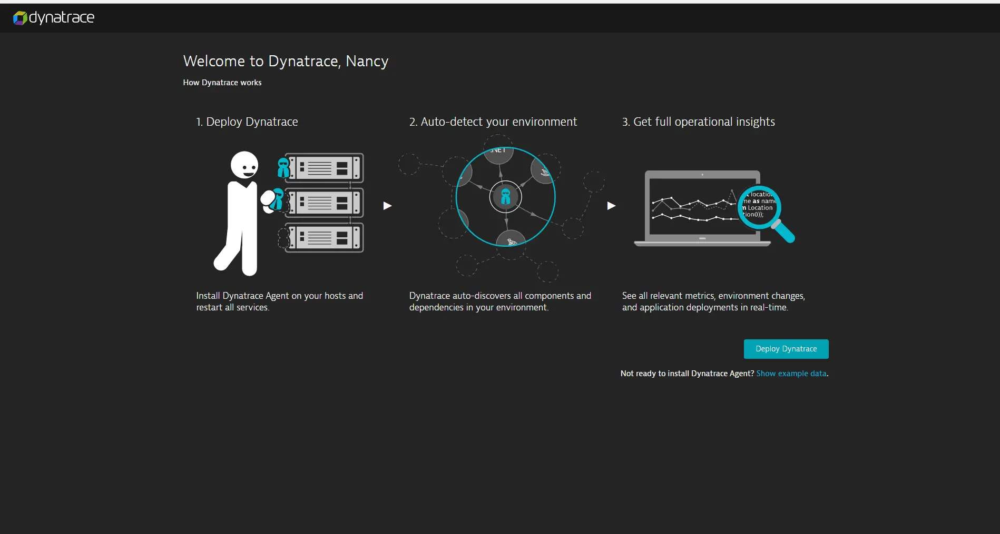
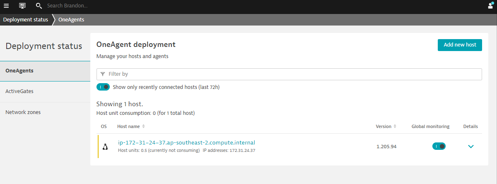
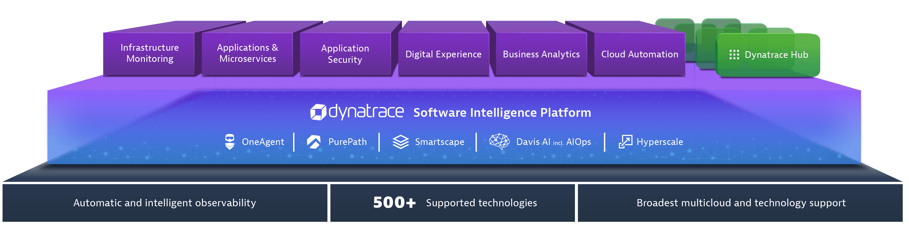

Enter your business email address and select Start free trial.
Provide a few account details (nothing too technical) and agree to the terms and conditions.
Select Create account.
Once created, you'll be shown the page below and you can deploy Dynatrace.

THAT'S IT! You're done! You should be directed to your own Dynatrace SaaS tenant page (eg. abc12345.live.dyntrace.com)
Download the OneAgent
Follow these steps below to install Dynatrace OneAgent on a host.
Select Dynatrace Hub on the left navigation bar
Select OneAgent
Select Download OneAgent button from the bottom right.
Choose your Operating system or platform eg. Windows, Linux or Kubernetes, Openshift
Follow the on-screen instructions for getting and installing OneAgent.
Once done, the installer will tell you that Dynatrace OneAgent has successfully connected to a Dynatrace cluster node and display a congratulations message.
Validate the installation in Deployment status
Click on Deployment status in the left navigation to check the status of the connected host.
You should be able to see a connected host as per the image below.

Dynatrace will automatically discover the processes and dependencies of your application. You will be able to explore various functionalities within Dynatrace like:
Watch this short, 5 minute overview demo to see how Dynatrace can be your single source of truth with AI intelligence that can tell you what you need to focus on so you can spend more time innovating and less time trouble shooting.
Dynatrace Davis
All these are analyzed through Dynatrace DAVIS, our AI Engine that uses deterministic AI to performs an automatic fault-tree analysis. This is not just correlation but causation of problems.
You can now also access your home dashboard. However to obtain greater observability, some additional post-deployment steps are required. These steps could be found in our documentation page
Deploy to other hosts
You can see how easy it is to deploy Dynatrace to one host and immediately start monitoring it. But that was just a taste of what Dynatrace can do for you.
Advanced Use Cases
Dynatrace is an all-in-one platform that's purpose-built for a wide range of use cases.

Infrastructure Monitoring
Dynatrace delivers simplified, automated infrastructure monitoring that provides broad visibility across your hosts, VMs, containers, network, events, and logs. Dynatrace continuously auto-discovers your dynamic environment and pulls infrastructure metrics into our Davis® AI engine, so you can consolidate tools and cut MTTI.
Applications and Microservices
Dynatrace provides automated, code-level visibility and root-cause answers for applications that span complex enterprise cloud environments. Dynatrace automatically captures timing and code-level context for transactions across every tier. It also detects and monitors microservices automatically across the entire hybrid cloud, from mobile to mainframe.
Digital Experience Monitoring (DEM)
Dynatrace DEM provides Real User Monitoring (RUM) for every one of your customer's journeys, synthetic monitoring across a global network, and 4K movie-like Session Replay. This powerful combination helps you optimize your applications, improve user experience, and provide superior support across all digital channels.
Digital Business Analytics
By tying business metrics and KPIs to data that's already flowing through our application performance and digital experience modules, you get real-time, AI-powered answers to your critical business questions.
Cloud Automation
Dynatrace AIOps gives you precise answers automatically. Dynatrace collects high-fidelity data and maps dependencies in real-time so that the Dynatrace explainable AI engine, Davis®, can show you the precise root causes of problems or anomalies, enabling quick auto-remediation and intelligent cloud orchestration.
The above use cases are setup as labs which you can run through: